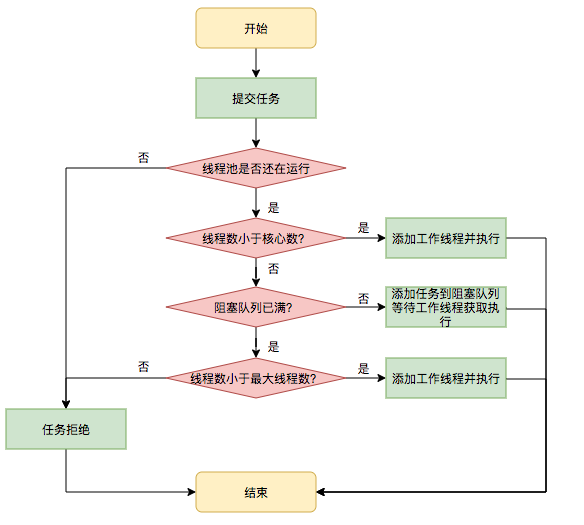

对于有的基础使用外，我觉得还是有必要深入学习下，像线程池和 Netty，也不能干等着参与项目是吧，那还是找几个点深挖下去，学习能力和收获不会骗人。
# 生命周期
将两个值用一个高低位表示，使用（compareAndSet，单机有硬件层面的支持）很好的统一了一致性又不用复杂锁处理。
线程池运行的状态，并不是用户显式设置的，而是伴随着线程池的运行，由内部来维护。线程池内部使用一个变量维护两个值：运行状态 (runState) 和线程数量 (workerCount)。在具体实现中，线程池将运行状态 (runState)、线程数量 (workerCount) 两个关键参数的维护放在了一起，如下代码所示：
private final AtomicInteger ctl = new AtomicInteger(ctlOf(RUNNING, 0)); |
ctl 这个 AtomicInteger 类型，是对线程池的运行状态和线程池中有效线程的数量进行控制的一个字段， 它同时包含两部分的信息：线程池的运行状态 (runState) 和线程池内有效线程的数量 (workerCount)，高 3 位保存 runState，低 29 位保存 workerCount，两个变量之间互不干扰。用一个变量去存储两个值，可避免在做相关决策时，出现不一致的情况，不必为了维护两者的一致，而占用锁资源。通过阅读线程池源代码也可以发现，经常出现要同时判断线程池运行状态和线程数量的情况。线程池也提供了若干方法去供用户获得线程池当前的运行状态、线程个数。这里都使用的是位运算的方式，相比于基本运算，速度也会快很多。
关于内部封装的获取生命周期状态、获取线程池线程数量的计算方法如以下代码所示：
private static int runStateOf(int c) { return c & ~CAPACITY; } // 计算当前运行状态 | |
private static int workerCountOf(int c) { return c & CAPACITY; } // 计算当前线程数量 | |
private static int ctlOf(int rs, int wc) { return rs | wc; } // 通过状态和线程数生成 ctl |
ThreadPoolExecutor 的运行状态有 5 种，分别为：

# 执行流程和机制
详解

执行的逻辑是推拉模式，而非自旋（这里有次面试不知道从哪里记错了，给问烂了）
- 线程池的本质是对任务和线程的管理，而做到这一点最关键的思想就是将任务和线程两者解耦，不让两者直接关联，才可以做后续的分配工作。线程池中是以生产者消费者模式，通过一个阻塞队列来实现的。阻塞队列缓存任务，工作线程从阻塞队列中获取任务。
- 阻塞队列 (BlockingQueue) 是一个支持两个附加操作的队列。这两个附加的操作是：在队列为空时，获取元素的线程会等待队列变为非空。当队列满时，存储元素的线程会等待队列可用。阻塞队列常用于生产者和消费者的场景，生产者是往队列里添加元素的线程，消费者是从队列里拿元素的线程。阻塞队列就是生产者存放元素的容器，而消费者也只从容器里拿元素。
- 阻塞：特殊的，如果队列为空，
take()方法会让线程进入阻塞状态，直到有新任务进入队列。此时线程会被唤醒并继续执行任务。
- Worker 是通过继承 AQS，使用 AQS 来实现独占锁这个功能。没有使用可重入锁 ReentrantLock，而是使用 AQS，为的就是实现不可重入的特性去反应线程现在的执行状态。
- lock 方法一旦获取了独占锁，表示当前线程正在执行任务中。
- 如果正在执行任务，则不应该中断线程。
- 如果该线程现在不是独占锁的状态，也就是空闲的状态，说明它没有在处理任务，这时可以对该线程进行中断。
- 线程池在执行 shutdown 方法或 tryTerminate 方法时会调用 interruptIdleWorkers 方法来中断空闲的线程，interruptIdleWorkers 方法会使用 tryLock 方法来判断线程池中的线程是否是空闲状态；如果线程是空闲状态则可以安全回收。
# 进阶
实际中很难以量化，由于 IO 密集型和 CPU 密集型的任务运行起来的情况差异非常大的原因，很难说准确的给出恰当的参数。
美团给出方案是：动态化。将线程池的配置从代码中迁移至配置中心。
动态化线程池的核心设计包括以下三个方面：
- 简化线程池配置：线程池构造参数有 8 个，但是最核心的是 3 个：corePoolSize、maximumPoolSize，workQueue，它们最大程度地决定了线程池的任务分配和线程分配策略。考虑到在实际应用中我们获取并发性的场景主要是两种：
- 并行执行子任务，提高响应速度。这种情况下，应该使用同步队列，没有什么任务应该被缓存下来，而是应该立即执行。
- 并行执行大批次任务，提升吞吐量。这种情况下，应该使用有界队列，使用队列去缓冲大批量的任务，队列容量必须声明，防止任务无限制堆积。所以线程池只需要提供这三个关键参数的配置，并且提供两种队列的选择，就可以满足绝大多数的业务需求，Less is More。
- 参数可动态修改：为了解决参数不好配，修改参数成本高等问题。在 Java 线程池留有高扩展性的基础上，封装线程池，允许线程池监听同步外部的消息，根据消息进行修改配置。将线程池的配置放置在平台侧，允许开发同学简单的查看、修改线程池配置。
- 增加线程池监控：对某事物缺乏状态的观测，就对其改进无从下手。在线程池执行任务的生命周期添加监控能力，帮助开发同学了解线程池状态。

# 自定义
# 需求分析
- 首先肯定是多线程，且我们知道线程池的线程是复用的，也就是肯定有个集合结构。首先为了效率，那肯定是 hash 方便，并且好像没有 key - value 的需求，源码也确实是 hashset。
- 执行的线程本身有独立的逻辑需求，像要能从等待队列获取任务继续执行，然后为空过久是否要销毁等。因此 Set 不能直接放一个 Thread ，封装一个 worker 继承它。
- 除了核心线程数，最大线程数，队列数这些属性外，还需要实现等待队列
- 等待队列我们希望是公平的，那么就一段进一段出，频繁删改，保证效率那就用 ArrayDeque
- 此外，还要考虑锁、阻塞与唤醒。除了 Synchronized 的 wait () 和 notify ()，还可以使用 Lock 和 Condition（await 和 signal，使用 AQS，性能更好）
- 不希望第 N+1 个任务一直阻塞的话，还要加个超时机制
- 避免虚假唤醒（唤醒广播后，只有一个拿到，其他应该继续当前状态），所以逻辑内要用 while 而不能用 if（一次性判断，直接到了后续操作）
- 拒绝策略：死等、超时等待、丢弃、抛异常、主线程执行
# 具体实现
具体的策略直接用 lambda 表达式写在了构造函数里（类似 sort 里写 compare），也可以显示 new 并覆写
import lombok.extern.slf4j.Slf4j; | |
import java.util.ArrayDeque; | |
import java.util.Deque; | |
import java.util.HashSet; | |
import java.util.concurrent.TimeUnit; | |
import java.util.concurrent.locks.Condition; | |
import java.util.concurrent.locks.ReentrantLock; | |
/** | |
* @package: PACKAGE_NAME | |
* @author: zyakmd | |
* @description: TODO | |
* @date: 2024/5/27 14:28 | |
*/ | |
@Slf4j(topic = "c.TestPool") | |
public class test { | |
public static void main(String[] args) { | |
CustomThreadPool customThreadPool = new CustomThreadPool(1, | |
1000, TimeUnit.MILLISECONDS, 1, (queue, task)->{ | |
// 1. 死等 | |
//queue.put(task); | |
// 2) 带超时等待 | |
//queue.offer(task, 1500, TimeUnit.MILLISECONDS); | |
// 3) 让调用者放弃任务执行 | |
//log.debug ("放弃 {}", task); | |
// 4) 让调用者抛出异常 | |
//throw new RuntimeException ("任务执行失败" + task);// 5) 让调用者自己执行任务 | |
task.run(); | |
}); | |
for (int i = 0; i < 4; i++) { | |
int j = i; | |
customThreadPool.execute(() -> { | |
try { | |
Thread.sleep(1000L); | |
} catch (InterruptedException e) { | |
e.printStackTrace(); | |
} | |
log.debug("{}", j); | |
}); | |
} | |
} | |
} |
CustomThreadPool 和 拒绝策略的函数式接口
@FunctionalInterface // 拒绝策略 | |
interface RejectPolicy<T> { | |
void reject(BlockingQueue<T> queue, T task); | |
} | |
@Slf4j(topic = "c.ThreadPool") | |
class CustomThreadPool { | |
// 任务队列 | |
private BlockingQueue<Runnable> taskQueue; | |
// 线程集合 | |
private HashSet<Worker> workers = new HashSet<>(); | |
// 核心线程数 | |
private int coreSize; | |
// 获取任务时的超时时间 | |
private long timeout; | |
private TimeUnit timeUnit; | |
private RejectPolicy<Runnable> rejectPolicy; | |
// 执行任务 | |
public void execute(Runnable task) { | |
// 当任务数没有超过 coreSize 时，直接交给 worker 对象执行 | |
// 如果任务数超过 coreSize 时，加入任务队列暂存 | |
synchronized (workers) { | |
if(workers.size() < coreSize) { | |
Worker worker = new Worker(task); | |
log.debug("新增 worker{}, {}", worker, task); | |
workers.add(worker); | |
worker.start(); | |
} else { | |
// 1) 死等 | |
// 2) 带超时等待 | |
// 3) 让调用者放弃任务执行 | |
// 4) 让调用者抛出异常 | |
// 5) 让调用者自己执行任务 | |
taskQueue.tryPut(rejectPolicy, task); | |
} | |
} | |
} | |
public CustomThreadPool(int coreSize, long timeout, TimeUnit timeUnit, int queueCapcity, RejectPolicy<Runnable> rejectPolicy) { | |
this.coreSize = coreSize; | |
this.timeout = timeout; | |
this.timeUnit = timeUnit; | |
this.taskQueue = new BlockingQueue<>(queueCapcity); | |
this.rejectPolicy = rejectPolicy; | |
} | |
class Worker extends Thread{ | |
private Runnable task; | |
public Worker(Runnable task) { | |
this.task = task; | |
} | |
@Override | |
public void run() { | |
// 执行任务 | |
// 1) 当 task 不为空，执行任务 | |
// 2) 当 task 执行完毕，再接着从任务队列获取任务并执行 | |
// while(task != null || (task = taskQueue.take()) != null) { | |
while(task != null || (task = taskQueue.poll(timeout, timeUnit)) != null) { | |
try { | |
log.debug("正在执行...{}", task); | |
task.run(); | |
} catch (Exception e) { | |
e.printStackTrace(); | |
} finally { | |
task = null; | |
} | |
} | |
synchronized (workers) { | |
log.debug("worker 被移除{}", this); | |
workers.remove(this); | |
} | |
} | |
} | |
} |
ReentrantLock 和 Condition 实现的带超时的阻塞双端队列
@Slf4j(topic = "c.BlockingQueue") | |
class BlockingQueue<T> { | |
// 1. 任务队列 | |
private Deque<T> queue = new ArrayDeque<>(); | |
// 2. 锁 | |
private ReentrantLock lock = new ReentrantLock(); | |
// 3. 生产者条件变量 | |
private Condition fullWaitSet = lock.newCondition(); | |
// 4. 消费者条件变量 | |
private Condition emptyWaitSet = lock.newCondition(); | |
// 5. 容量 | |
private int capcity; | |
public BlockingQueue(int capcity) { | |
this.capcity = capcity; | |
} | |
// 阻塞获取 | |
public T take() { | |
lock.lock(); | |
try { | |
while (queue.isEmpty()) { | |
try { | |
emptyWaitSet.await(); | |
} catch (InterruptedException e) { | |
e.printStackTrace(); | |
} | |
} | |
T t = queue.removeFirst(); | |
fullWaitSet.signal(); | |
return t; | |
} finally { | |
lock.unlock(); | |
} | |
} | |
// 带超时的获取 | |
public T poll(long timeout, TimeUnit unit){ | |
lock.lock(); | |
try { | |
// 将 timeout 统一转换为 纳秒 | |
long nanos = unit.toNanos(timeout); | |
while (queue.isEmpty()) { | |
try { | |
// 返回值是剩余时间 | |
if (nanos <= 0) { | |
return null; | |
} | |
nanos = emptyWaitSet.awaitNanos(nanos); | |
} catch (InterruptedException e) { | |
e.printStackTrace(); | |
} | |
} | |
T t = queue.removeFirst(); | |
fullWaitSet.signal(); | |
return t; | |
} finally { | |
lock.unlock(); | |
} | |
} | |
// 阻塞添加 | |
public void put(T task) { | |
lock.lock(); | |
try { | |
while (queue.size() == capcity) { | |
try { | |
log.debug("等待加入任务队列 {} ...", task); | |
fullWaitSet.await(); | |
} catch (InterruptedException e) { | |
e.printStackTrace(); | |
} | |
} | |
log.debug("加入任务队列 {}", task); | |
queue.addLast(task); | |
emptyWaitSet.signal(); | |
} finally { | |
lock.unlock(); | |
} | |
} | |
// 带超时的添加 | |
public boolean offer(T task, long timeout, TimeUnit timeUnit) { | |
lock.lock(); | |
try { | |
long nanos = timeUnit.toNanos(timeout); | |
while (queue.size() == capcity) { | |
try { | |
if(nanos <= 0) { | |
return false; | |
} | |
log.debug("等待加入任务队列 {} ...", task); | |
nanos = fullWaitSet.awaitNanos(nanos); | |
} catch (InterruptedException e) { | |
e.printStackTrace(); | |
} | |
} | |
log.debug("加入任务队列 {}", task); | |
queue.addLast(task); | |
emptyWaitSet.signal(); | |
return true; } finally { | |
lock.unlock(); | |
} | |
} | |
public int size() { | |
lock.lock(); | |
try { | |
return queue.size(); | |
} finally { | |
lock.unlock(); | |
} | |
} | |
public void tryPut(RejectPolicy<T> rejectPolicy, T task) { | |
lock.lock(); | |
try { | |
// 判断队列是否满 | |
if(queue.size() == capcity) { | |
rejectPolicy.reject(this, task); | |
} else { // 有空闲 | |
log.debug("加入任务队列 {}", task); | |
queue.addLast(task); | |
emptyWaitSet.signal(); | |
} | |
} finally { | |
lock.unlock(); | |
} | |
} | |
} |
# 小小总结
源码真多，比对了下。大体逻辑是这样，也是各类八股长提的，像线程复用，阻塞队列的实现，也考虑了拒绝情况、虚假唤醒、用 nanos 处理超时
一些区别：
- 源码用的 for (;😉
- 但只用了一个 Condition（管理线程池的关闭和终止操作）
- 各个方法里直接用
ReentrantLock的lock和unlock - 并且用一个
AtomicInteger ctl控制线程池本身的运行状态。 - ...